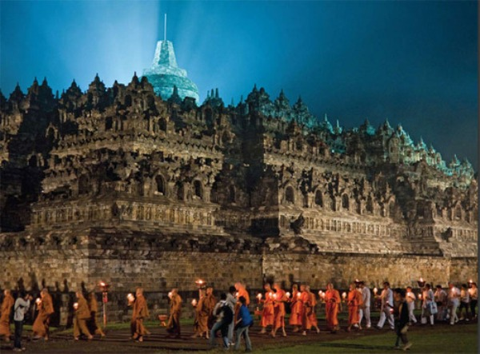

Central Java
Borobudur Temple – Magelang
The magnificent Borobudur temple is the world’s biggest Buddhist monument, an ancient site widely considered to be one of the world’s seven wonders. Built in the 9th century during the reign of the Syailendra dynasty, the temple’s design in Gupta architecture reflects India's influence on the region, yet there are enough indigenous scenes and elements incorporated to make Borobudur uniquely Indonesian. This awe inspiring monument is truly a marvel. After a visit here you will understand why it is Indonesia’s most visited tourist attraction and a famous icon of Indonesia’s cultural heritage. Located on the island of Java, the temple sits majestically on a hilltop overlooking lush green fields and distant hills. It covers an enormous area, measuring 123 x 123 meters. The monument is a marvel of design, decorated with 2,672 relief panels and 504 Buddha statues. The architecture and stonework of this temple has no equal. And it was built without using any kind of cement or mortar! The structure is like a set of massive interlocking Lego blocks held together without any glue. The temple has remained strong even through ten centuries of neglect. It was rediscovered in 1815, buried under volcanic ash. In the 1970’s the Indonesian Government and UNESCO worked together to restore Borobudur to its former majesty The restoration took eight years to complete and today Borobudur is one of Indonesia and the world’s most valuable treasures. The temple is decorated with stone carvings in bas-relief representing images from the life of Buddha. Commentators claim that this is the largest and most complete ensemble of Buddhist reliefs in the world, unsurpassed in artistic merit. This monument is both a shrine to the Lord Buddha and a place for Buddhist pilgrimage. The ten levels of the temple symbolize the three divisions of the religion’s cosmic system. As visitors begin their journey at the base of the temple, they make their way to the top of the monument through the three levels of Budhist cosmology, Kamadhatu (the world of desire), Rupadhatu (the world of forms) and Arupadhatu (the world of formlessness). As visitors walk to the top the monument guides the pilgrims past 1,460 narrative relief panels on the wall and the balustrades. The whole monument itself resembles a giant stupa, but seen from above it forms a mandala. The great stupa at the top of the temple sits 40 meters above the ground. This main dome is surrounded by 72 Buddha statues seated inside perforated stupa. Historians suggest that the name of Borobudur comes from the Sanskrit ‘Vihara Buddha Uhr’ or the ‘Buddhist monastery on the hill’.
Batu Raden
Baturraden. Central Java’s most outstanding resort, approximately 14 kms north of Purwokerto, an administrative town in the southern of Java island. It is occupies a fine site on the slopes of Mount Slamet, 650 m above sea level, feel the coolness air, nice gardens, pines forest, hot springs, ponds and bungalow-style hotels.
Lawang Sewu
Abandoned and antique buildings have a tendency to inspire stories. Legends, Myths, Haunted tales of the building's origin, its owners and builders. Indonesia as a whole is home to numerous historical and mystical buildings, many antique and dating back hundreds of years. One such building is Lawang Sewu which was built by the Dutch between the years 1904 and 1907 and functioned as head office for The Dutch East Indies Railway Company (Nederlandsch Indische Spoorweg Maatschappij) until 1942. During World War II, the building was used as Japanese Military Headquarters. It is located on the Tugu Muda roundabout, in Semarang, capital city of Central Java. Lawang Sewu in the Javanese language is translated to mean "A thousand doors". And while the building does not really have a thousand doors, the massive, three-story structure is lined with numerous doors and windows that resemble doors, from which the building obtained its name. This large and mysterious building is not simply a deserted structure, but is an icon of history and heroes. On October 14, 1945, shortly after Indonesia declared her Independence, the building became the scene for the bloody "Battle of Semarang". The 5-day battle took place between AMKA, Angkatan Muda Kereta Api (Railway Youth Force) against the Kempeitai and Kidobutai, the Japanese Military Police and Strike Force. Many were tortured and executed during this battle. In 1950, the Tugu Muda monument was built in remembrance of this fight for freedom and in honor of those who died in battle. Each year, a celebration is held around this monument in commemoration of the heroic, 5-day struggle at Lawang Sewu.
Dieng Plateau
The name ‘dieng’ which literally translates as ‘abode of the Gods’ says all you need to know about this collection small ancient temples set in the remarkable volcanic landscape of the Dieng Plateau. The misty location, sulphurous springs and colored lakes truly make this a place of natural wonder and cultural significance. Come here and you will be transported back to ancient times. The temples are remnants from the glorious period of the Hindu empire in Java dating back to the 7th and 8th centuries. Standing on a plateau 2,000 meters (6,500 ft) above sea level, it is the extraordinary setting of these temples which make them most remarkable. It is believed that this place was chosen as the sacred location because of the spectacular landscape. From the bubbling mudholes, brightly colored sulphur lakes and thick mist surrounding the plateau, visitors will easily understand why the ancient Javanese considered this place to be the seat of supernatural powers. Modern visitors to the plateau are enthralled by the unearthly beauty of this spot, with many finding it quite eerie. Each of the small temples is named after figures in the epic tale of the Mahabarata such as Bima, Gatutkaca, Arjuna and Srikandi. It is believed that these temples used to serve as residences of Hindu priests who would spread Hindu teachings. The natural splendors of this location are fascinating. From lakes with green and yellow hues to the pristine waters of the reflective ‘mirror’ lake, the natural beauty of this spot is superb. The mirror lake is particularly impressive as it offers a perfectly reflective image of the landscape. While sadly, the impact of logging can be seen as many of the trees surrounding the lake have been cut down, it still remains an impressive natural phenomenon. For a truly amazing spectacle, arrive at the plateau at sunrise and you will be spoiled with not one, but two amazing views of the sunrise, a ‘golden’ and a ‘silver’ sunrise. This double sunrise is a unique natural phenomenon. Visitors take in the first ‘golden’ sunrise from a watch tower while the second ‘silver’ sunrise can be seen from the temples. Even the drive to the plateau offers impressive sights. On the way up, visitors will pass through tobacco plantations and beautiful mountain scenery. The Dieng people are used to visitors and warmly welcome travelers to the region.
Karimun Java
Travelers to Central Java do not need to go far to enjoy marine life, above and below the sea. The Karimunjawa archipelago, located in the Java Sea, north of the capital city of Semarang, has everything to offer divers and backpackers who enjoy trekking and snorkeling along a pristine beach. The Karimun Jawa National Park (not to be confused with the Karimun Islands in Bintan, Riau) is one amongst seven marine national parks in Indonesia. Taking only a four to five-hour trip from Semarang, you will be surrounded by natural beauty, so that you wish that you could stay there forever. Separated from the larger Java Island, the marine conservation area is far from the hustle and bustle of the metropolis, although it floats geographically only 120 kilometers off the north coast of Semarang between Java and Kalimantan. Such distance forms a natural fence from physical degradation and has made it culturally resilient from modern influences. Karimunjawa was formally declared a Marine Protection Area in 1986 encompassing some 272,000 acres, with the largest part being sea. Then on February 22, 1999, it was signed as the Karimunjawa National Park. The pristine beaches and seas are home to healthy coral reefs that scatter in an 80 kilometers wide area all the way to the coast of Jepara, a Central Java town, well known for its top-drawer furniture. Two protected biota species here are the black coral (Antiphates sp.) and organ pipe coral (Tubipora musica). Others include the triton trumpet, the hornet helmet, and the pearly-chambered nautilus. Here are also hawksbill turtles, common green turtles, and on land are the red-breasted parakeet and other tropical bird species. There are 27 islands in this national park, where only 5 are inhabited. Towns and villages are set on the island of Karimunjawa (the largest island), Kemujan, Nyamuk, Parang, and Genting. By Kemujan island is the wreck of the Panamanian ship called the “Indono” that sank here in 1955 and is now habitat of coral and fish and a popular site for wreck diving. Best time to visit the Park is between April to October. Legend has it that the islands were sighted and discovered by a prominent cleric, known as sunan in Java. His name was Amir Hasan or known as Sunan Nyamplungan, son of Sunan Muria and nephew of Sunan Kudus, two of the nine most prominent clerics in the history of the spread of Islam on Java. Being the closest marine national park from Central Java, Karimunjawa attracts those who wish to take in its natural beauty and learn about marine life.